4박 5일 오사카 추억 여행
잊지 못할 순간들과 유용한 여행 팁을 공유합니다.
✈️ 여행 소개
안녕하세요! 2024년 7월 12일부터 16일까지, 4박 5일 동안 다녀온 일본 오사카 여행의 추억을 기록하고, 여러분께 유용한 정보를 공유하고자 이 웹사이트를 만들었습니다.
오사카는 맛있는 음식, 활기찬 거리, 그리고 친절한 사람들로 가득한 매력적인 도시였습니다. 이번 여행에서는 오사카의 유명 관광지를 둘러보고, 현지 맛집들을 탐방하며, 꿈에 그리던 유니버셜 스튜디오 재팬도 방문했답니다!
이곳에서 저의 생생한 여행 후기와 함께, 오사카 여행을 계획하시는 분들을 위한 작은 팁들을 확인해보세요.
🗓️ 여행 일정 (4박 5일)
1일차: 오사카 도착 & 도톤보리
- 간사이 국제공항 도착 후 난바역으로 이동
- 숙소 체크인 및 짐 정리
- 도톤보리 거리 탐방 (글리코상 인증샷!)
- 저녁 식사: 오코노미야끼 & 타코야끼
2일차: 오사카 성 & 신세카이
- 오전: 오사카 성 방문 (천수각 관람)
- 점심 식사: 근처 맛집에서 라멘
- 오후: 신세카이 거리 구경 (츠텐카쿠 타워)
- 저녁 식사: 쿠시카츠 전문점
3일차: 유니버셜 스튜디오 재팬 (USJ)
- 하루 종일 USJ 즐기기! (익스프레스 티켓 활용 추천)
- 해리포터 존, 쥬라기 공원, 미니언 파크 등
- 점심 및 저녁은 USJ 내 식당 이용
- 퍼레이드 및 야간 쇼 관람
4일차: 교토 당일치기 또는 오사카 쇼핑
(선택 사항으로 일정을 구성해보세요. 예시입니다.)
- 옵션 1: 교토 당일치기 (기요미즈데라, 아라시야마 등)
- 옵션 2: 오사카 시내 쇼핑 (신사이바시, 아메리카무라)
- 저녁 식사: 마지막 밤을 위한 특별한 만찬 (예: 스키야키)
5일차: 출국
- 오전: 기념품 쇼핑 및 짐 정리
- 점심 식사: 공항으로 가기 전 간단한 식사
- 간사이 국제공항으로 이동 및 출국 수속
🍜 맛집 탐방
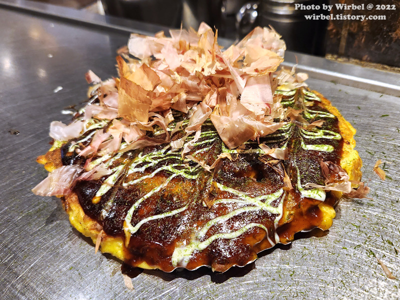
치보 (CHIBO) - 오코노미야끼
도톤보리 근처
두툼하고 다양한 재료가 들어간 오코노미야끼 전문점. 웨이팅이 있을 수 있지만 기다릴 가치가 있어요!
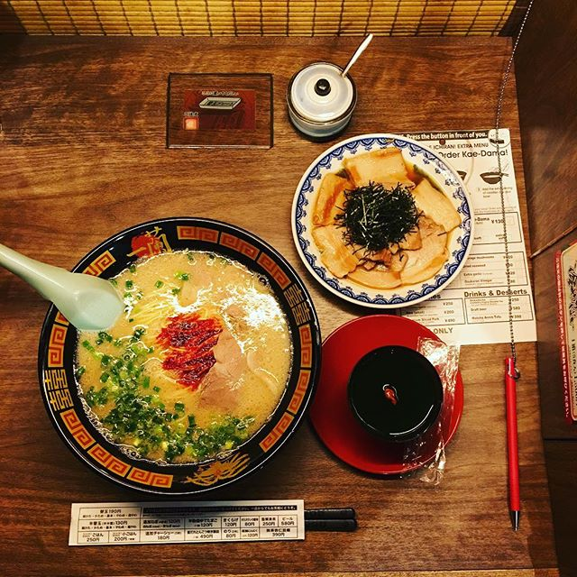
이치란 라멘 (Ichiran Ramen)
오사카 여러 지점
혼밥하기 좋은 칸막이 좌석과 자신만의 스타일로 커스터마이징 가능한 돈코츠 라멘 맛집.
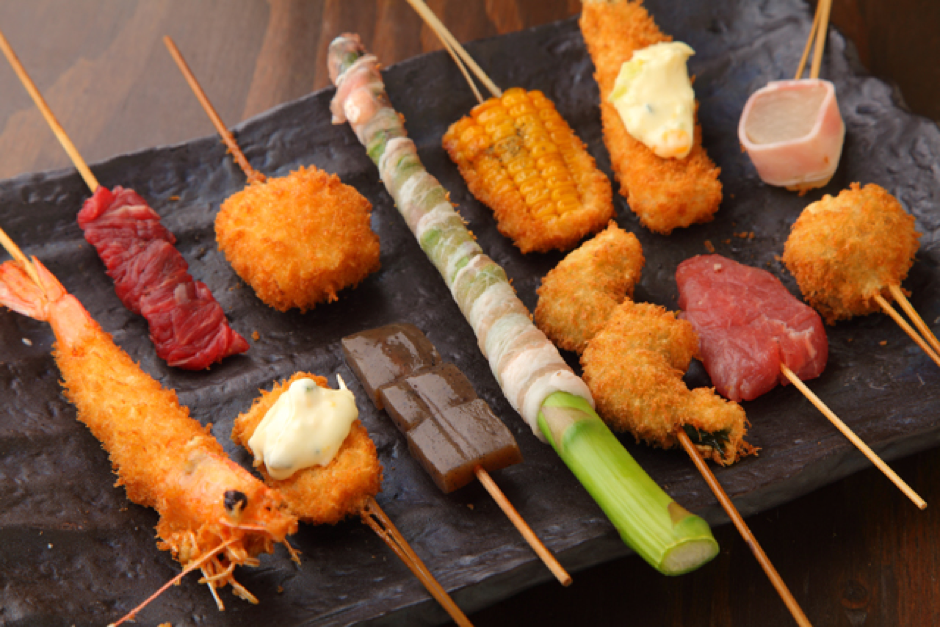
다루마 (Daruma) - 쿠시카츠
신세카이 본점
다양한 꼬치튀김을 맛볼 수 있는 원조 쿠시카츠 가게. 소스는 한 번만 찍어 먹는 것이 규칙!
🎢 유니버셜 스튜디오 재팬 (USJ)
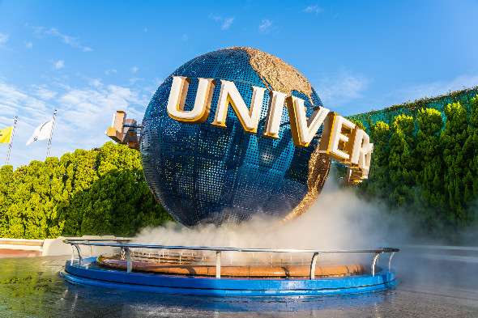
USJ 방문 팁 & 정보
- 익스프레스 티켓: 성수기나 주말 방문 시 대기 시간을 줄이기 위해 익스프레스 티켓 구매를 고려해보세요.
- 개장 시간 공략: 공식 개장 시간보다 일찍 도착해서 인기 어트랙션을 먼저 이용하는 것이 좋습니다.
- 싱글 라이더: 혼자 또는 일행과 떨어져 타도 괜찮다면 싱글 라이더 줄을 이용하면 대기 시간을 단축할 수 있습니다.
- 필수 어트랙션: 해리포터 앤드 더 포비든 저니, 더 플라잉 다이너소어, 헐리우드 드림 더 라이드 등을 추천합니다.
- 앱 활용: USJ 공식 앱을 다운로드하면 대기 시간 확인, 쇼 스케줄 확인 등이 편리합니다.
- 기념품: 각 테마존마다 특색있는 기념품이 많으니 구경하는 재미도 쏠쏠합니다.
📸 여행 사진첩

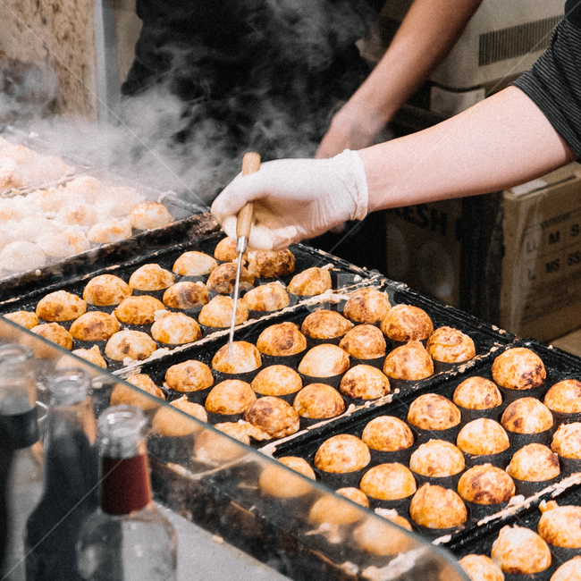

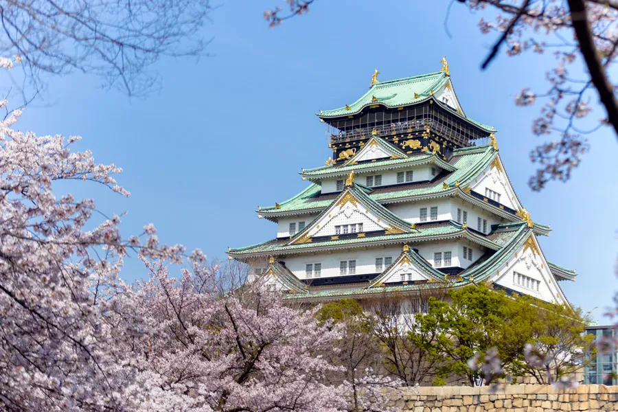
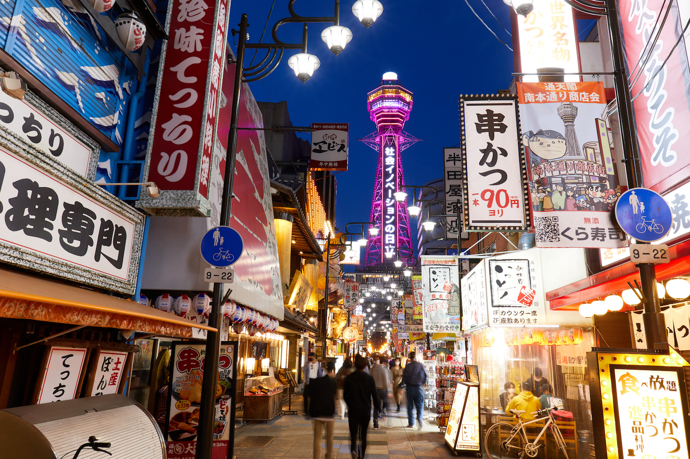
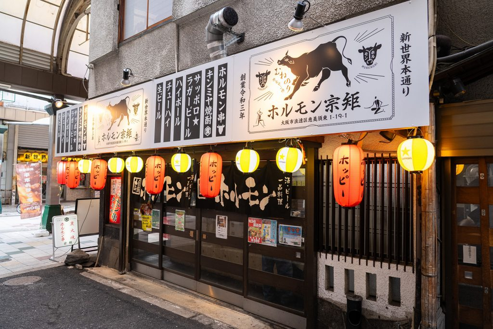
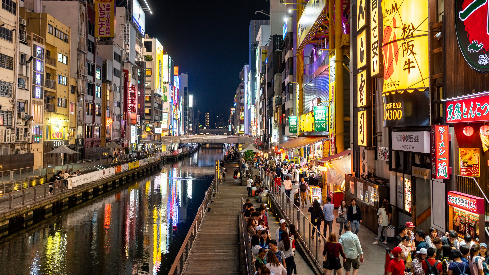
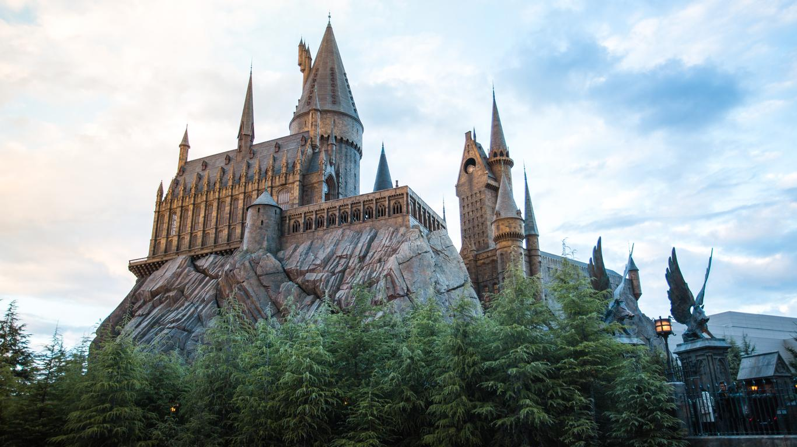
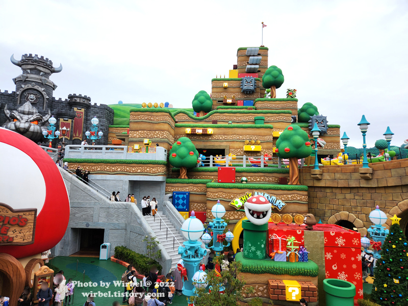
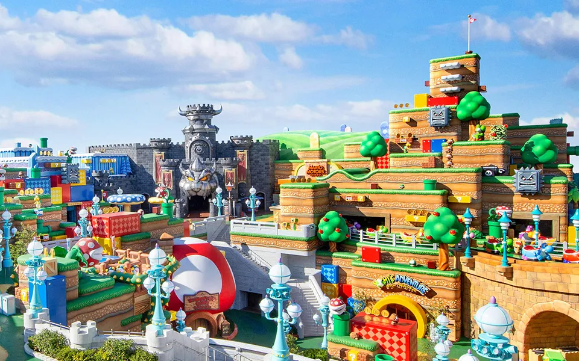